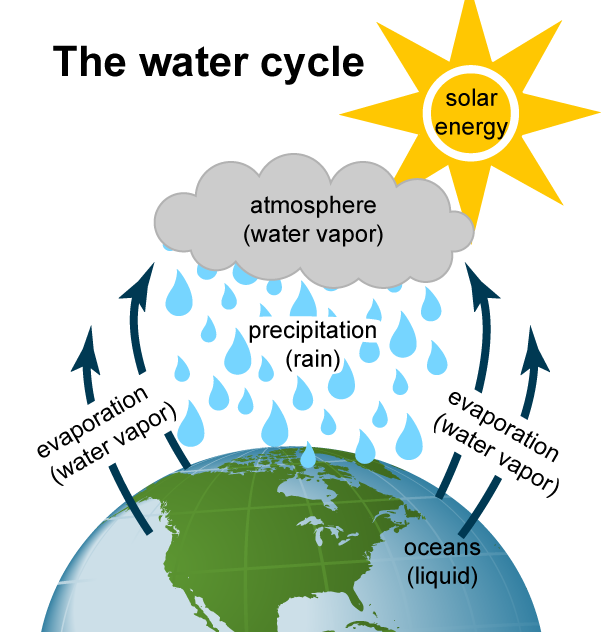

Understanding the water cycle is important to understanding hydropower. The water cycle has three steps:
Solar energy heats water on the surface of rivers, lakes, and oceans, which causes the water to evaporate
Water vapor condenses into clouds and falls as precipitation—rain and snow.
Precipitation collects in streams and rivers, which empty into oceans and lakes, where it evaporates and begins the cycle again.
The amount of precipitation that drains into rivers and streams in a geographic area determines the amount of water available for producing hydropower. Seasonal variations in precipitation and long-term changes in precipitation patterns, such as droughts, can have significant effects on the availability of hydropower production.
Because the source of hydroelectric power is water, hydroelectric power plants are usually located on or near a water source. The volume of the water flow and the change in elevation—or fall, and often referred to as head—from one point to another determine the amount of available energy in moving water. In general, the greater the water flow and the higher the head, the more electricity a hydropower plant can produce.
At hydropower plants water flows through a pipe, or penstock, then pushes against and turns blades in a turbine that spin to power a generator to produce electricity.
Pumped-storage hydropower facilities are a type of hydroelectric storage system where water is pumped from a water source up to a storage reservoir at a higher elevation. The water is released from the upper reservoir to power hydro turbines located below the upper reservoir. They usually pump water to storage when electricity demand and generation costs, or when wholesale electricity prices are relatively low, and release the stored water to generate electricity during peak electricity demand periods when wholesale electricity prices are relatively high. Pumped-storage hydroelectric systems generally use more electricity to pump water to the upper water storage reservoirs than they produce with the stored water. Therefore, pumped-storage facilities have net negative electricity generation balances